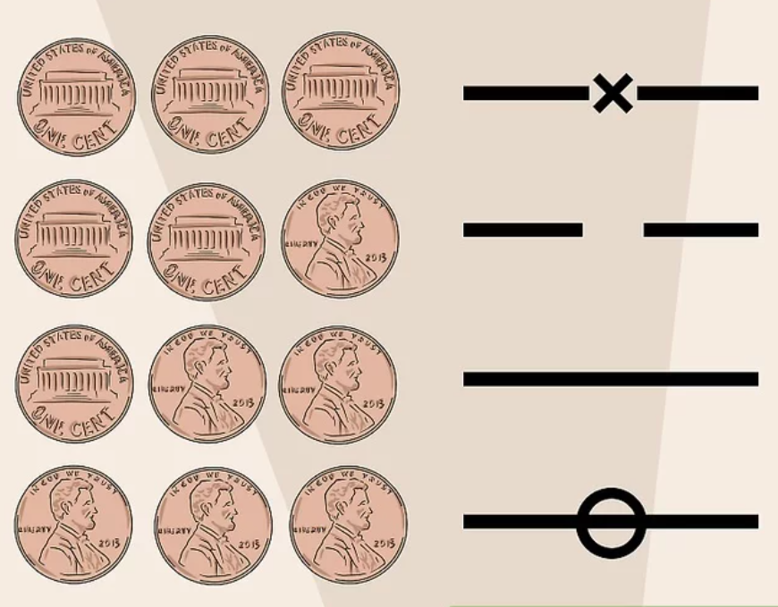

Side Info
Your instruction/expositionary text goes here.


Yin Yang Coin with 3 coins is a method dating back to the Zhou Dynasty (1046–256 BC). It involves throwing three coins six times to create hexagrams that symbolize different situations based on Yin and Yang lines. Each hexagram, of 64 possible combinations, carries specific interpretations. If "old" lines are thrown, they form a new hexagram symbolizing future changes.